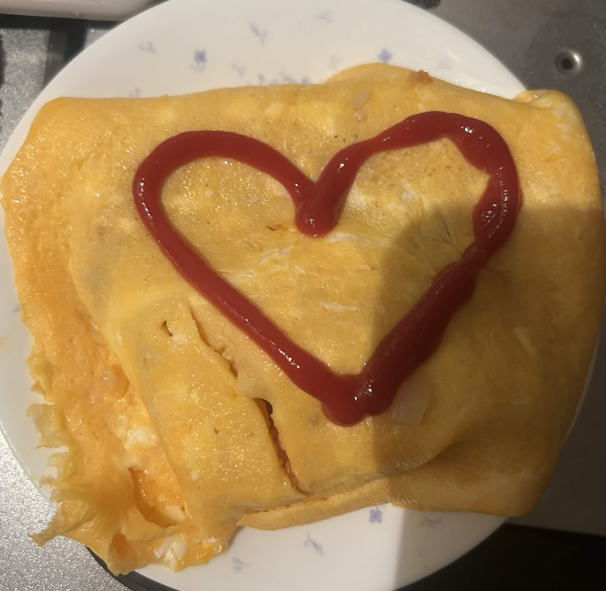

<h1>まや</h1>
<p>最近料理にハマっています</p>
<p>でも大体焦がしてます</p>


<h2>好きなもの</h2>
<ul>
    <li>twitter</li>
    <li>ゲーム</li>
    <li>音楽</li>
</ul>

<h2>オムライスの作り方</h2>
<ol>
    <li>卵を割る</li>
    <li>卵を焼く</li>
    <li>なんやかんやあって完成！！！！！！！！！！！！！！！！</li>
</ol>



<p>オムライスを作る際に参考にしたサイトです</p>
<a href="https://www.kurashiru.com/recipes/38d2d6f5-9a8d-4866-9bb8-64a3113b7700">オムライスのレシピを見る</a>

<h2>得意な料理一覧</h2>
<table border="1">
    <tr>
        <th>番号</th>
        <th>料理名</th>
    </tr>
    <tr>
        <td>1</td>
        <td>肉じゃが</td>
    </tr>
    <tr>
        <td>2</td>
        <td>カレー</td>
    </tr>
    <tr>
        <td>3</td>
        <td>ハンバーグ</td>
    </tr>
</table>

<h2>このページの感想を送る</h2>

<form method="get">
    <dl>
        <dt><label for="visitor-name">お名前</label></dt>
        <dd><input type="text" id="visitor-name" name="visitor-name"></dd>

        <dt>いちばんよかったところ</dt>
        <dd>
            <label><input type="radio" name="best" value="photo">写真</label>
            <label><input type="radio" name="best" value="list">好きなもの</label>
            <label><input type="radio" name="best" value="table">得意な料理一覧</label>
        </dd>
        <dt><label for="comment">感想</label></dt>
        <dd><textarea id="comment" name="comment" rows="4"></textarea></dd>
    </dl>
    <button type="submit">送信する</button>
</form>